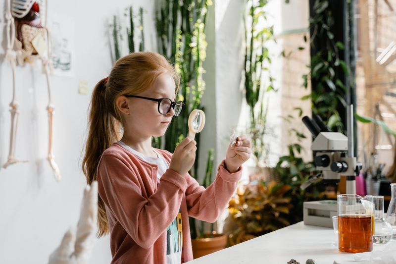
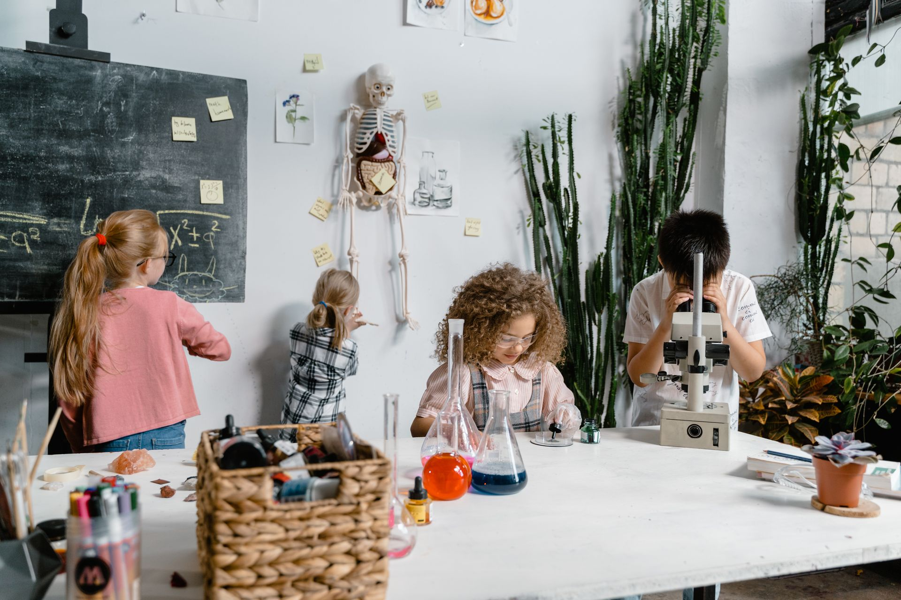
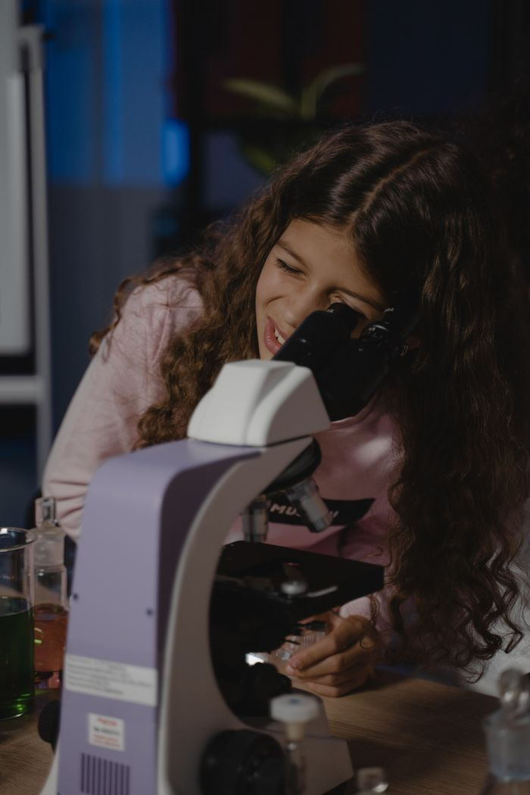
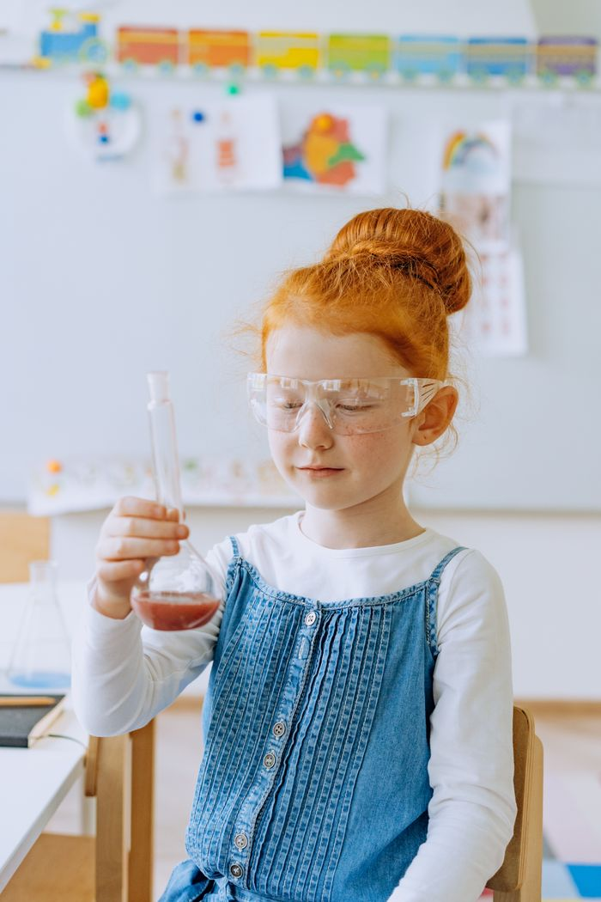
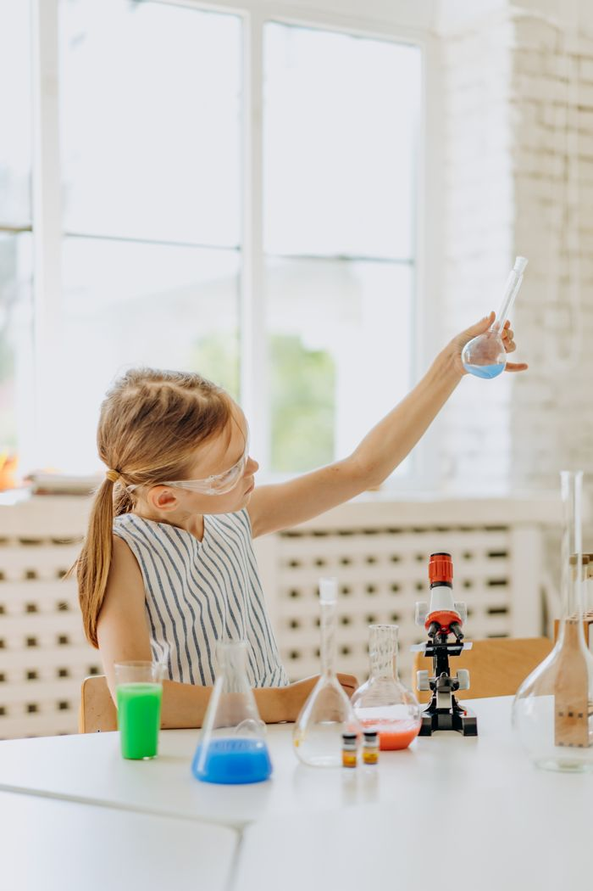
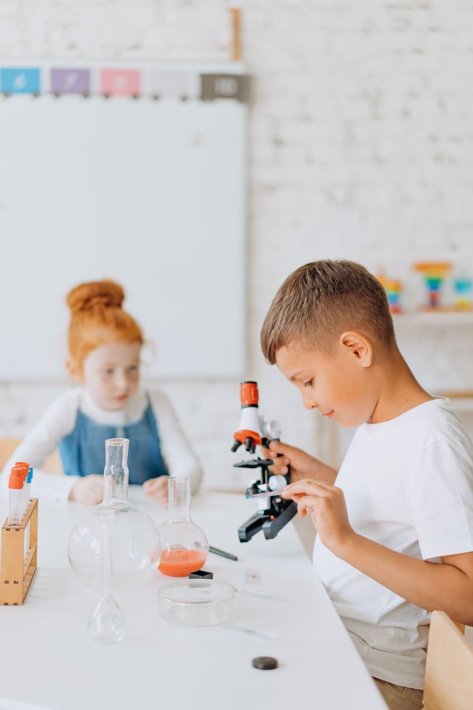
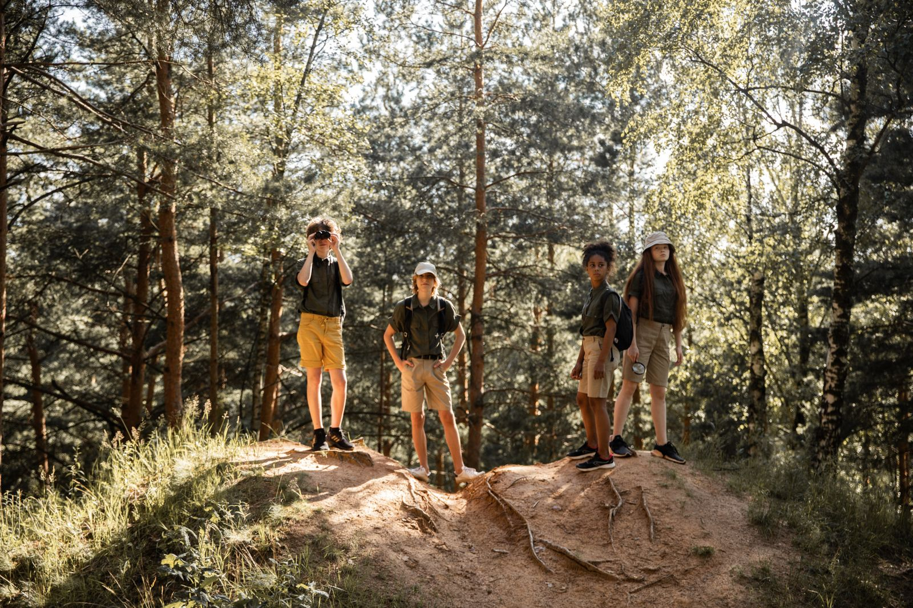
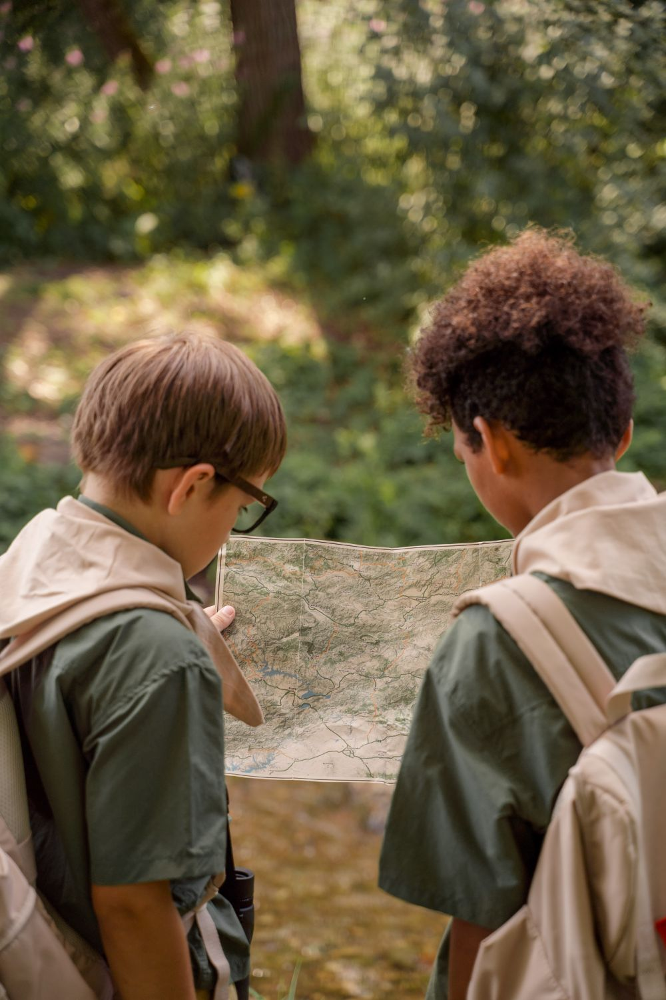
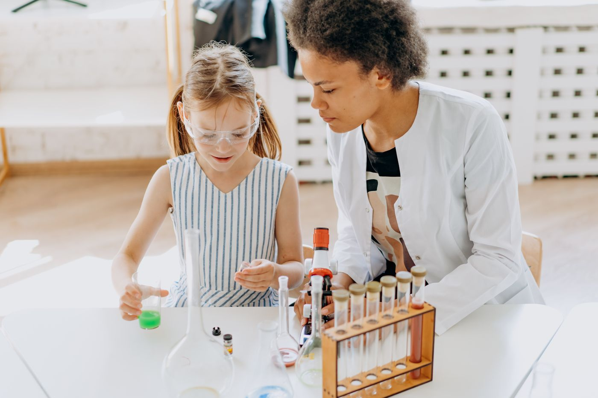
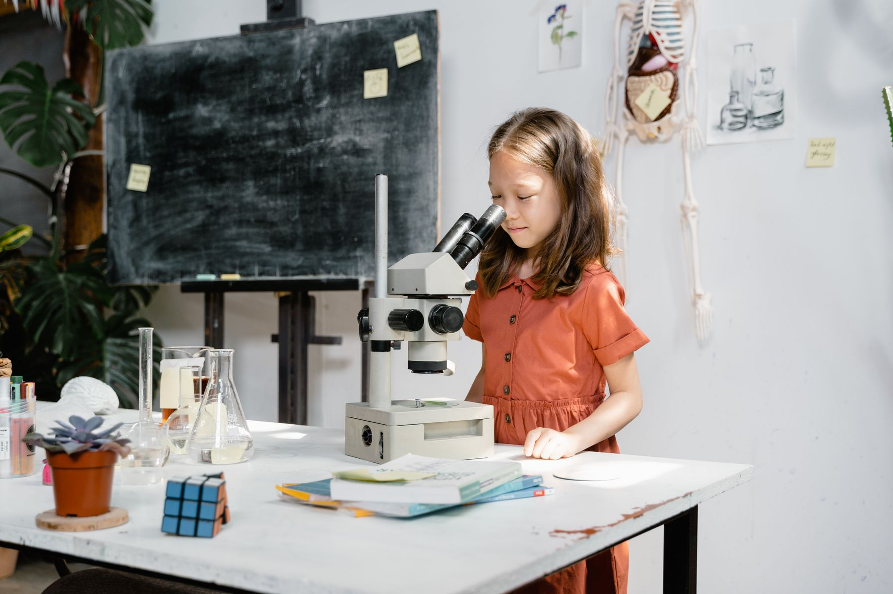

Sprouts
Explore관찰하고 그리기. 돋보기, 씨앗, 물의 상태 변화.
초1–2 · 토 10:00


초1–중2 손으로 해 보는 과학실험교실Gungri science lab · 개포동




매 수업 시작에 “무슨 일이 일어날까?”를 한 줄로 씁니다.

현미경, 비커, 보안경을 둘이 나눠 쓰지 않습니다. 자기 자리에서 처음부터 끝까지 직접 합니다.
실험이 끝나면 치우는 것까지 수업입니다.

선생님 한 분이 모든 자리를 돌 수 있는 인원입니다.
예측 10분 · 실험 50분 · 정리와 일지 30분.
매주 한 장. 학기 끝에 제본해 집으로 보냅니다.
숲 · 하천 · 과학관 중 한 곳, 토요일 오전.
학년별 네 과정 — 같은 주제를 학년마다 다른 깊이로 합니다.


04토
화산 폭발 모형초1–4 · 10:00–11:30 · 보호자 함께
18토
종이컵 스피커초3–6 · 10:00–11:30 · 전화로 자리 확인
25토
대모산 곤충 관찰전 학년 · 09:30 입구 집합 · 우천 시 실내
